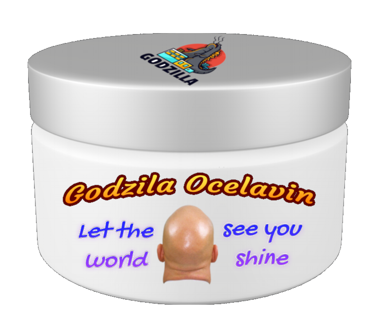
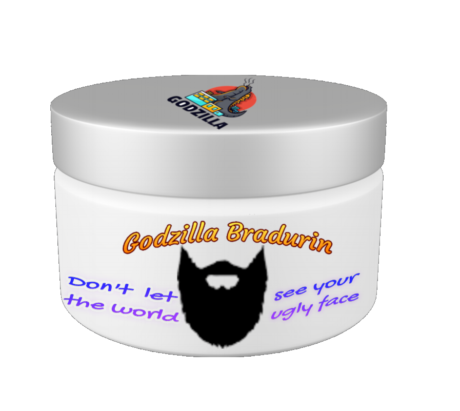
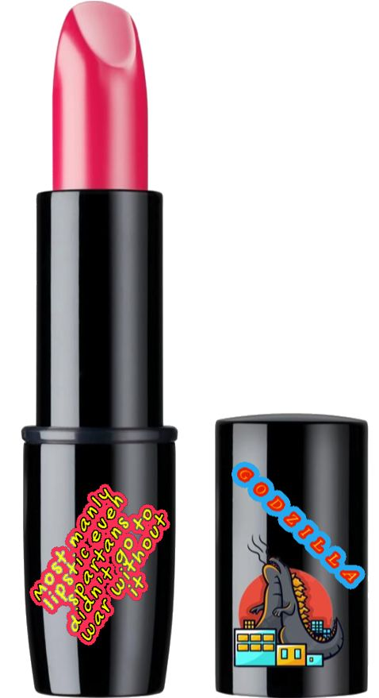

Godzila Ocelavin cream
Do you have problems with hair? You have a lot of it? We had that problem also so we decided to make Godzila Ocelavin cream. Imagine living without need to spend money to barber to just cut your hair. We know that it looks just like dream, but now with Godzila Ocelavin cream you can make that dream reality. No more barbers, no more girls that don't like your hair.
How Godzilla Ocelavin cream is made?
Godzila Ocelavin cream is product made of natural ingredients. You just need to mix 100% toxic acid with alcohol,coca-cola and menthol monbons.
How to use it?
You just need to apply cream to your head everyday until the rest of your life. Never stop, because you don't want to see that hair, and we want your money until you die.
Is the cream safe?
No absolutely not but you need it trust us.
What are side effects?
This great product is without any big side effects. Is possible to have a little huge pain, going blind, your skin can start to have some open wounds. You can also die, but that is only if you are allergic to some of ingredients, or if you are not allergic.
Price for Godzilla Celavin?
Get one now only at 100,99$ USD per cream, or get 10 at special offer for 3000,99$USD. Not this offer won't last long so HURRY and buy NOW.
Godzila Bradurin cream
Do you have problems growing beard?? Are you a woman or anything in unlimited universe of genders?? If you are you came to the right place. With our Godzila Bradurin you can grow beard like Chewbacca from star wars. Imagine all barbers that will lose jobs because people use Godzila Ocelavin... now that is not fair, so with this cream we can get them those jobs back. Even make them profit. Now you will be person to make this possible and you should be proud because you saved someones job. You are real hero.
How Godzilla Bradurin cream is made?
We use natural resorses to make this dung, Godzilla's milk and charcoal.
How to use it?
You just need to put cream on your beard everyday and it will grow.
Is the cream safe?
Sure 100% if you don't get somekind of poisoning.
What are side effects?
There are no side effects, if you survive poisoning. Also there are few things like it can make your body paralyzed, grow few heads.. few of everypart of your body. You won't die if you survive.
Price for Godilla Bradurin?
Get one now only at 159,99$ USD per cream, or get 10 at special offer for 2500,99$USD. Not this offer won't last long so HURRY and buy NOW.
Godzilla Lipstick
Do you want to instill fear into everyone? Do you want to have great lips while doing so? Well we got you covered for that. Spartans used it in every fight they won. When they didn't use it they lost. When Napoleon and Hitler lost to Russia it was also because they stopped using our lipstick. With our lipstick you will be able to make even Thanos paralyzed with fear.
How Godzilla Lipstick is made?
This is crystallized Godzilla fart, softened with Godzilla milk.
How to use it?
You need to put it as many times during the day as you can. Faster you run out, faster you will buy.
Is the lipstick safe?
If you don't stop using it, and you don't die it is.
What are side effects?
Well nothing much things like swollen lips, poisoning, suffocation.. just minor things.
Price for Godzilla Lipstick
This product is really cheap only 80,99$ USD, or you can go for our special offer at price of 15 (2330$ USD) get 5.
Any special package?
Sadly for now we don't have anything special to offer but soon we will hold event where you can buy both of them for price of ten